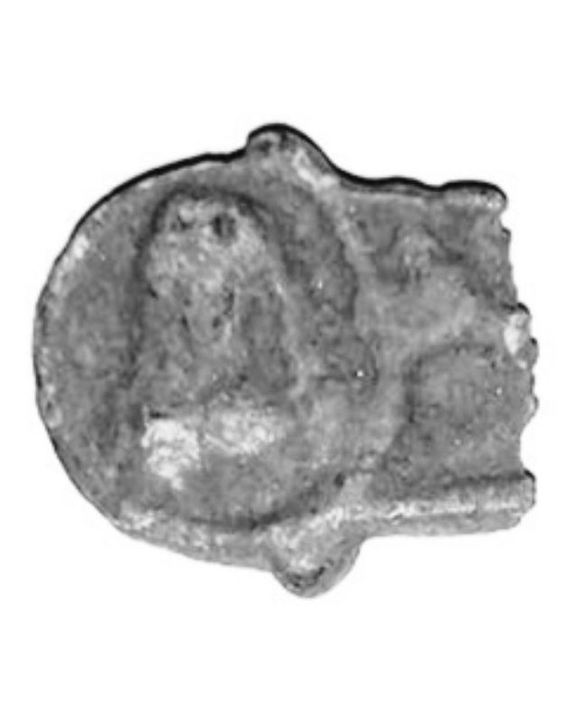

Catalog › CE-0216 · JOS2022-1
Extremitate trilobată de cruce-encolpion cu bustul unei sfinte în medalion, com. Ion Creangă
prima jumătate a sec. XIII (1201–1250) · com. Ion Creangă (extravilan), jud. Neamț, România · Complexul Muzeal Național Neamț, Piatra Neamț
single valve of a reliquary cross, bronz; prima jumătate a c. XIII (1201–1250); found at com. Ion Creangă (extravilan), jud. Neamț, România; kept at Complexul Muzeal Național Neamț, Piatra Neamț.


Identificare
- Categorie
- Valvă izolată
- Material
- Bronz
- Tehnică
- Turnare în relief
- Stare
- Fragmentară
Iconografie
- Descriere avers
- Extremitate trilobată a unei cruci-encolpion, cu bustul în relief al unei sfinte, în medalion; poartă maphorion, cu mâna dreaptă la piept. Peste cercul medalionului se distinge încheietura unei mâini cu palma deschisă și degetul mare în sus, parte din scena Răstignirii.
- Descriere revers
- Adâncitură caracteristică relicvarelor, fără negativul reliefului feței.
Datare și atribuire
- Datare
- prima jumătate a sec. XIII (1201–1250)
- Centru
- Rusia Kieveană
- Tipologie
- Spinei 1992, tip A
Descoperire
- Localitate
- com. Ion Creangă (extravilan)
- Regiune
- jud. Neamț
- Țară
- România
- Context
- Descoperire izolată
- Anul
- 2021
- Coordonate
- 46.8621° N, 26.9919° E
- Precizia locului
- Coordonate exacte
Păstrare și referințe
- Colecție
- Complexul Muzeal Național Neamț, Piatra Neamț
- Bibliografie
- V. Josanu, Encolpioane inedite descoperite recent în județul Neamț, în Evul Mediu neterminat / A befejezetlen középkor / The Unfinished Middle Ages. Omagiu adus profesorului Adrian Andrei Rusu la împlinirea vârstei de 70 de ani, ed. G.-D. Iegar, P. L. Szűcs, G. Rusu, F. Vasilescu, Cluj-Napoca, Editura Mega, 2022, p. 707–723 [Josanu 2022], p. 708–709, reprodusă la Fig. 1–2 (planșele, p. 720). Bibliografie citată în sursă: Spinei 1992, 161; Peskova–Korzuhina 2003, 17; Nečitajlo–Nečitajlo 2009, 41; Lovag 1999, 21; Pucko 1986; Marinescu 2014; Hânceanu 2014; Spinei–Maxim-Alaiba 1991, 139; Fedorov 2000, 22.
- Figura
- Fig. 1–2
- Planșe
- Josanu 2022, p. 720
- Analogii
- Knin (Croația), Muzeul Croat al Monumentelor Arheologice din Split; Budapesta și Székesfehérvár (Lovag 1999, nr. 21–22); Grumezoaia (jud. Vaslui); Herina (jud. Bistrița-Năsăud); Chilii, com. Valea Ursului (jud. Neamț).
- Observații
- Datare după Josanu: prima jumătate a sec. XIII (data spre care converg, după autor, încadrările encolpioanelor prezentate). Fragment de bronz, 2,3 × 2,5 cm, rupt din vechime, neinventariat și necurățat, în depozitul Complexului Muzeal Național Neamț. Predat împreună cu alte bunuri în 30–31 ianuarie 2021; găsit pe un teren arabil, în extravilan, la cca 0,10 m adâncime, cu detector de metale, de Ovidiu Vasile Constantin. În jur, fragmente ceramice din sec. II–IV și din perioada medievală. Tipul întreg se reconstituie cu Răstignirea pe avers și Maica Domnului cu Pruncul (Hodighitria) pe revers. Coordonate: citite din marcajul de pe harta Fig. 3 a sursei (46°51'43,6"N 26°59'30,7"E).
Citare: Corpus Encolpiorum, CE-0216, Extremitate trilobată de cruce-encolpion cu bustul unei sfinte în medalion, com. Ion Creangă, https://vitaliejosanu1979-ux.github.io/primul-meu-proiect/piese/JOS2022-1/ (accesat 2026-10-17).